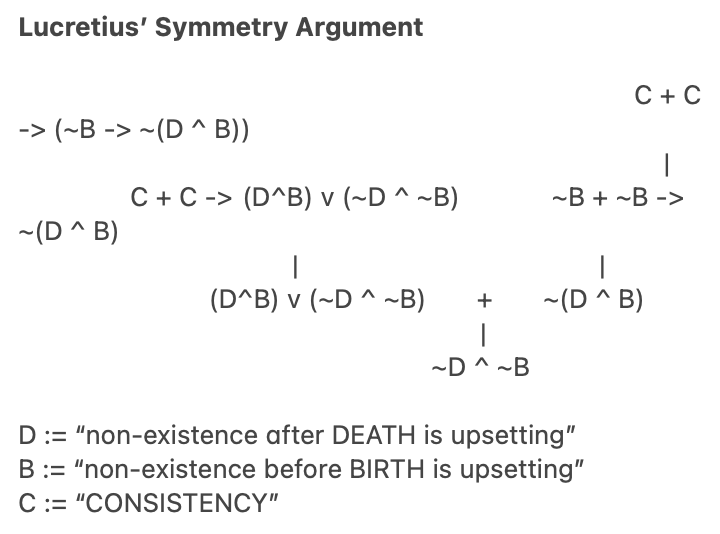
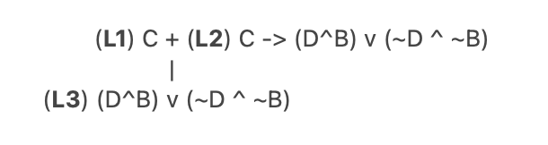
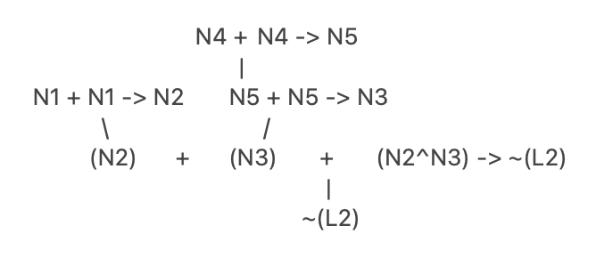
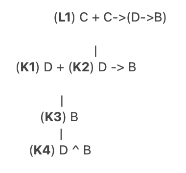
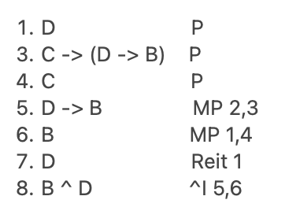

Published May 15, 2026

In his book 'Death,' Shelly Kagan considers an argument by the Roman philosopher Lucretius on why we ought not to fear death.
We think death is bad for us. Why? In my own case, of course, it’s because after my death I won’t exist. As the deprivation account points out, after my death it will be true that if only I were still alive, I could be enjoying the good things in life.
Fair enough, says Lucretius, but wait a minute. The time after I die isn’t the only period during which I won’t exist. It’s not the only period in which it is true that if only I were alive, I could be enjoying the good things in life. There’s another period of nonexistence: the period before my birth. To be sure, there will be an infinite period after my death in which I won’t exist—and realizing that fills me with dismay. But be that all as it may, there was of course also an infinite period before I came into existence. Well, says Lucretius, if nonexistence is so bad—and by the deprivation ac- count it seems that we want to say that it is—shouldn’t I be upset at the fact that there was also this eternity of nonexistence before I was born?
But, Lucretius suggests, that’s silly, right? Nobody is upset about the fact that there was an eternity of nonexistence before they were born. In which case, he concludes, it doesn’t make any sense to be upset about the eternity of nonexistence after you die.
Lucretius' argument as Kagan frames it can be diagrammed as follows:

Kagan then goes on to outline an objection to Lucretius' argument, made by Thomas Nagel. I reprint Lucretius' argument with the component of the argument Nagel targets in bold brackets:

Let us label this L1 through to L3, for ‘Lucretius’:

This translates as:
L1. We are being CONSISTENT.
L2. If we are being CONSISTENT, then either we find both non-existence after DEATH and before BIRTH upsetting or we find neither upsetting.
L3. (MP 1,2) We find both non-existence after DEATH and before BIRTH upsetting or we find neither upsetting.
Nagel argues L2 is false. Being upset at death but not at our non-existence before our birth can, Nagel thinks, be consistent after all. Kagan represents his argument as follows:
Although we can say the words “if only I had been born earlier,” this isn’t really pointing to a genuine metaphysical possibility. So there is no point in being upset at the nonexistence before you started to exist, because you couldn’t have had a longer life by coming into existence earlier. (In contrast, as we have seen, you could have a longer life by going out of existence later.)
We can break this down into three claims:
N1. Although we can say the words “if only I had been born earlier,” this isn’t really pointing to a genuine metaphysical possibility.
N2. There is no point in being upset at the nonexistence before you started to exist because you couldn’t have had a longer life by coming into existence earlier.
N3. You could have a longer life by going out of existence later.
Elsewhere, Kagan cites a reason Nagel gives in defence of N3:
The fact that I am going to die at eighty is a contingent fact about me. It is not a necessary fact about me that I die at eighty. So it is an easy enough matter to imagine my living longer, by having my death come later.
Let us break this down as:
N4. The fact that I am going to die at eighty is a contingent fact about me, not a necessary fact about me.
N5. It is an easy enough matter to imagine my living longer, by having my death come later.
Then we can diagram this as follows:

Nagel’s negation of L2 in Lucretius’ Symmetry Argument is not the only way to block Lucretius’ main conclusion. Another strategy Kagan identifies is the following:
Perhaps we really do need to treat these two eternities of nonexistence on a par; but instead of saying with Lucretius that there was nothing bad about the eternity of nonexistence before birth and so nothing bad about the eternity of non-existence after death, maybe we should say, instead, that just as there is something bad about the eternity of nonexistence after we die, so too there must be something bad about the eternity of nonexistence before we were born!
We can label this as follows:
L1. Consistency requires we treat these two eternities of nonexistence on a par. K1. There is something bad about the eternity of nonexistence after we die. K2. If there is something bad about the eternity of nonexistence after we die, so too there must be something bad about the eternity of nonexistence before we were born. K3. (MP K1,K2) There must be something bad about the eternity of nonexistence before we were born. K4. (^I K3,K1) There is something bad about the eternity of nonexistence after we die, and there is something bad about the eternity of nonexistence before we were born.
Which we can diagram as follows:

Or in Fitch we have:
